Trabajo 4 :
Predicción del número de vehículos registrados en el sistema de tránsito
nacional
Autores:
Hamza Lasri.
Diego Zuluaga Castro.
Juan Rafael Ramírez Builes.
Carlos Daniel Sánchez Ramírez.
Este proyecto se sumerge en la apasionante tarea de abordar el desafío de modelar y predecir el número diario de vehículos registrados en el Registro Único Nacional de Tránsito (RUNT). El RUNT, como ente centralizador de información sobre el parque automotor, ofrece una perspectiva valiosa para comprender y anticipar las dinámicas cambiantes de la movilidad vehicular en el ámbito nacional.
Este proceso de predicción se erige como una herramienta estratégica, permitiendo anticipar tendencias, planificar recursos y responder de manera efectiva a las demandas en constante evolución del sector de transporte. La creación de un modelo preciso y fiable para prever el flujo diario de registros vehiculares contribuirá significativamente a la toma de decisiones informada y eficiente en el ámbito del tránsito y la movilidad.
En este contexto, exploraremos métodos avanzados de modelado, análisis estadístico y aprendizaje automático para extraer patrones y tendencias subyacentes en los datos del RUNT. La riqueza de información contenida en estos registros diarios nos ofrece una oportunidad única para desarrollar un modelo que no solo comprenda la complejidad del comportamiento vehicular, sino que también sea capaz de proyectar de manera precisa y anticipada el número de registros en el futuro.
A lo largo de este viaje analítico, nos enfrentaremos a desafíos inherentes a la variabilidad estacional, cambios en las tendencias a lo largo del tiempo y la dinámica intrínseca de un sistema de tránsito en constante cambio. La solidez de nuestro modelo dependerá no solo de su capacidad para ajustarse a los datos históricos, sino también de su capacidad para generalizar y proporcionar predicciones efectivas en situaciones nuevas.
A través de este proyecto, nos embarcamos en la búsqueda de un entendimiento más profundo de los factores que influyen en las fluctuaciones diarias de registros vehiculares. La creación de un modelo predictivo exitoso no solo contribuirá a la eficiencia operativa del RUNT, sino que también abrirá nuevas posibilidades para la planificación y gestión del tráfico a nivel nacional.
El conjunto de datos "registros_autos_entrenamiento.xlsx" representa una fuente exhaustiva de datos que captura el número de unidades de vehículos registrados diariamente en el Registro Único Nacional de Tránsito (RUNT) durante el período comprendido entre 2012 y 2017. Con un total de 2192 entradas, este conjunto de datos proporciona una valiosa oportunidad para analizar y modelar las tendencias en el ámbito de los registros de vehículos.
1. Fecha: La primera columna del conjunto
de datos está dedicada a la fecha, proporcionando una cronología detallada que
abarca las seis años estudiados.
2. Número de Unidades: La segunda columna representa
el número de unidades de vehículos registrados diariamente. Esta variable
constituye el objetivo principal de nuestro análisis y de nuestros modelos
predictivos.
-
Período Temporal: 2012 a 2017.
-
Granularidad Temporal: Datos diarios.
-
Número total de entradas: 2192.
-
Número de columnas: 2.
El objetivo principal de este
análisis es comprender los patrones temporales en los registros diarios de
vehículos y construir un modelo predictivo capaz de estimar el número de
unidades registradas para días futuros.
1. Tendencias Temporales: Identificación de tendencias,
estaciones y patrones recurrentes en los datos.
2. Correlaciones: Búsqueda de correlaciones
potenciales entre el número de unidades registradas y diversos factores
temporales o externos.
3. Características Adicionales: Integración de variables
adicionales, como días festivos, para enriquecer la comprensión del
comportamiento registrado.
Este conjunto de datos servirá como base para la creación, entrenamiento y evaluación de modelos de predicción, con el objetivo de proporcionar estimaciones precisas del número de unidades de vehículos registrados para los días siguientes. Los conocimientos generados contribuirán a una gestión más informada y proactiva del sistema de registro de vehículos.
Formato del Archivo:El conjunto de datos se encuentra
almacenado en formato Excel con el nombre
"registros_autos_entrenamiento.xlsx".
Esta presentación establecerá los cimientos para una exploración más profunda del conjunto de datos y la aplicación de técnicas analíticas avanzadas para cumplir con los objetivos establecidos en el contexto de la predicción del número de unidades registradas.
1. Pretratamiento de datos
2. Análisis de datos
3. División del Conjunto de Datos en Datos de Entrenamiento,
Validación
4.
Modelo y resultados
5. Predicción
1. Pretratamiento de datos
La creación de las columnas Dia,
Mes, Año, Nombre_del_dia, así como la columna
Holiday, permite agregar información temporal crucial al modelo, lo que puede
mejorar su capacidad para aprender y realizar predicciones más precisas. A
continuación, se describe cómo cada columna contribuye:
·
Dia y Mes: Estas
columnas permiten al modelo tener en cuenta las variaciones estacionales.
Algunos meses o días de la semana pueden tener tendencias específicas en cuanto
al registro de vehículos. Por ejemplo, podría haber un aumento en los registros
durante las vacaciones de verano.
·
Año: Esta columna
puede ayudar al modelo a identificar las tendencias a largo plazo o los cambios
estacionales que ocurren de un año a otro. Por ejemplo, el número de registros
de vehículos puede aumentar o disminuir año tras año debido a diversos factores
económicos, sociales o ambientales.
·
Nombre_del_dia (Día de la semana): Esta columna indica el día de la
semana, lo cual es importante ya que los modelos de tráfico pueden variar según
el día de la semana. Por ejemplo, los fines de semana pueden tener patrones de
tráfico diferentes en comparación con los días laborables.
·
Holiday (Día festivo): Esta columna binaria indica si un día es festivo o no. Los días festivos
pueden tener un impacto significativo en los hábitos de desplazamiento, con una
disminución o aumento en el número de registros de vehículos. Al incluir esta
información, el modelo puede ajustarse mejor a estas variaciones específicas.
En resumen, la adición de estas columnas temporales permite que el modelo considere patrones temporales más complejos y capture mejor las variaciones estacionales, las tendencias anuales y las particularidades relacionadas con días específicos, mejorando así su capacidad para realizar predicciones precisas.
En el primer paso de nuestro
análisis, convertimos la columna "Fecha" al formato datetime. Esta conversión fue esencial para permitir un uso
adecuado de la información temporal en nuestro conjunto de datos. Al realizar
esta transformación, pudimos extraer detalles más granulares como el día del
mes, el mes, el año y el día de la semana, que representamos respectivamente en
las columnas "Dia", "Mes", "Año" y "Nombre_del_dia".
La inclusión de estas columnas enriqueció nuestro conjunto de datos al proporcionar información temporal más detallada. Esto permitió que nuestro modelo de aprendizaje automático capturara mejor las variaciones estacionales, las tendencias diarias y mensuales, así como las particularidades asociadas a los días de la semana. En resumen, este paso de preprocesamiento de datos desempeñó un papel clave en mejorar la capacidad del modelo para comprender y utilizar patrones temporales complejos para predicciones más precisas.
Pour recopilar todas las fechas de
los días festivos, utilizamos el siguiente sitio web: [https://calendariohispanohablante.com/2012/calendario-colombia-2012.html]
A partir de este calendario en
línea, anotamos toda la información sobre los días festivos desde 2012 hasta
2018.
Una vez que compilamos esta lista, la guardamos en un archivo de Excel. Luego, este archivo se utilizó para establecer una correspondencia entre las fechas de los días festivos y la columna "Holiday" de nuestro marco de datos principal. De esta manera, al agregar esta columna a nuestro conjunto de datos, proporcionamos al modelo información esencial sobre los días festivos, lo que le permite comprender y tener en cuenta estas períodos específicos al predecir la cantidad de vehículos registrados.
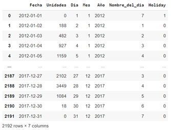
Figura 1: Exploración visual de nuestro
conjunto de datos y sus características.
2. Análisis de datos
Análisis por día de la semana
El análisis por día de la semana
revela una marcada tendencia de disminución en el número de registros de
vehículos durante el fin de semana, con una reducción significativa,
especialmente los domingos. Esta observación sugiere patrones de movilidad
distintos entre los días laborables y los días de descanso, destacando una
notable disminución en la actividad de registro de vehículos durante estos
períodos. Esta variación puede estar relacionada con diferentes comportamientos
de desplazamiento, como desplazamientos más limitados o actividades
recreativas, influyendo significativamente en los registros de vehículos
durante el fin de semana, donde la posibilidad de cierre de servicios podría
ser un factor adicional. Esta tendencia específica por día de la semana puede
proporcionar información valiosa para ajustar la planificación operativa y la
gestión de recursos en función de las fluctuaciones observadas en la demanda.
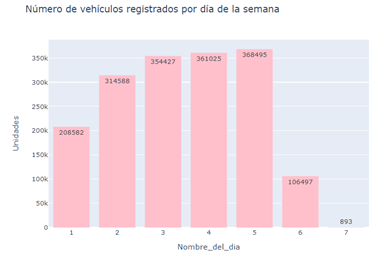
Figura 2: Número de vehículos
registrados por día de la semana
Análisis por año
El análisis por año revela que,
en general, no hay diferencias significativas en el número de registros de
vehículos, excepto por una ligera disminución desde 2015. Esta observación
sugiere una relativa estabilidad en las tendencias globales a lo largo de los
años, con una leve variación a la baja en los últimos años. Aunque la
disminución es leve, puede indicar cambios sutiles en los comportamientos de
registro de vehículos con el tiempo. Esta consistencia en las tendencias
anuales puede servir como base para la planificación a largo plazo, al tiempo
que destaca la necesidad de vigilar de cerca cualquier evolución potencial que
pueda influir aún más en los registros de vehículos.
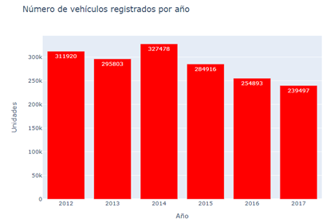
Figura 3: Número de vehículos
registrados por año
Análisis por mes
El análisis por mes revela un aumento significativo en el número de registros de vehículos durante diciembre. Esta tendencia puede atribuirse a diversos factores, como compras de vehículos relacionadas con las festividades de fin de año, promociones comerciales o incentivos fiscales para la compra de vehículos antes de finalizar el año. El aumento observado durante el mes de diciembre indica un período de actividad intensificada en el registro de vehículos, lo cual es esencial tener en cuenta en la planificación operativa y la gestión de recursos. Al comprender estas variaciones mensuales, se vuelve posible ajustar las estrategias según las fluctuaciones estacionales específicas y anticipar los picos de actividad en momentos clave del año.
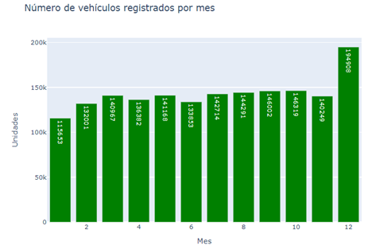
Figura 4: Número de vehículos
registrados por mes
Análisis de días festivos
El análisis de los días festivos revela que el número de registros de vehículos durante estos días es prácticamente nulo. Esta observación destaca una marcada tendencia a la disminución de la actividad de registro de vehículos durante los días festivos. Esta disminución significativa puede explicarse por diversos factores, como el cierre de organizaciones o servicios relacionados con los días festivos, lo que reduce las transacciones de registro de vehículos. Comprender esta disminución de la actividad durante los días festivos es crucial para una planificación eficaz, permitiendo ajustar los recursos y las operaciones en consecuencia, teniendo en cuenta las variaciones estacionales específicas asociadas a estas épocas particulares del año.
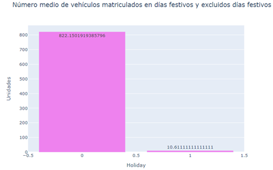
Figura 4: Número medio de vehículos
matriculados en días festivos y excluidos días festivos
Análisis por día
L'analyse por día confirma, al igual que
en el análisis mensual, una tendencia constante de aumento en el número de
registros de vehículos cada mes de diciembre. Esta observación recurrente
sugiere una marcada influencia estacional, posiblemente relacionada con factores
como la compra de vehículos para las celebraciones de fin de año u otras
promociones comerciales específicas de esa época. El aumento en el número de
registros durante el mes de diciembre destaca un periodo de actividad
intensificada en el proceso de registro de vehículos, un aspecto crucial a
considerar en la planificación operativa y gestión de recursos. Esta
comprensión de las variaciones mensuales permite ajustar estratégicamente las
estrategias para hacer frente a las fluctuaciones estacionales y anticipar los
picos de actividad durante este mes específico del año.
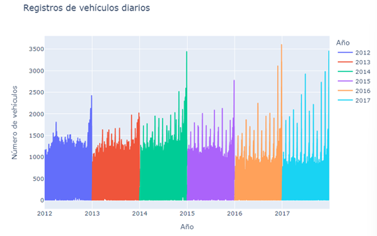
Figura 5: Registros de vehículos diarios
3.
División del
Conjunto de Datos en Datos de Entrenamiento, Validación
Para optimizar
el entrenamiento de nuestro modelo, llevaremos a cabo una división cuidadosa de
nuestros datos, separándolos en conjuntos de entrenamiento y validación:
-
Filtrado de Datos: Los datos se filtran en dos conjuntos distintos. El primer conjunto, `train_data`, incluye datos de los años 2012 a 2016,
mientras que el segundo conjunto, `validation_data`,
contiene datos del año 2017.
-
División en Características y Objetivo: Se crean conjuntos de
entrenamiento (`x_train` e `y_train`)
separando las características del objetivo. Las características (`x_train`) excluyen las columnas 'Unidades' y 'Fecha',
asumiendo que 'Unidades' es la variable a predecir.
Los objetivos (`y_train`) se definen como la columna
'Unidades'.
-
División del Conjunto de Validación: De manera similar, los
conjuntos de validación (`x_validation` e `y_validation`) se construyen utilizando los datos del año
2017, con la misma lógica de separación entre características y objetivo.
-
Visualización de Dimensiones: Se imprimen las dimensiones de los conjuntos creados para proporcionar
una rápida visión de la magnitud de cada conjunto.
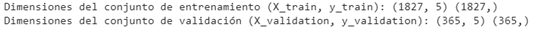
Figura 6 : Dimensiones de los datos de
entrenamiento y validación.
Esta división de datos en conjuntos de entrenamiento y validación es fundamental para evaluar el rendimiento del modelo. Los datos de entrenamiento permiten al modelo aprender patrones, mientras que los datos de validación ofrecen una evaluación independiente de la capacidad del modelo para generalizar sobre datos no vistos. Estos pasos son cruciales para construir un modelo sólido y predictivo.
4. Modelo y resultados
La fase crucial de la elección del modelo en nuestro enfoque de análisis predictivo implica la evaluación de diversas aproximaciones para determinar cuál se adapta mejor a nuestro conjunto de datos. En esta búsqueda, exploraremos varios modelos de regresión, cada uno con características específicas para abordar la complejidad de las relaciones presentes en nuestros datos sobre los registros de vehículos.
-
Regresión Lineal:
La regresión lineal, como modelo fundamental, busca establecer una relación lineal entre nuestras características y la variable objetivo, en nuestro caso, el número de unidades de vehículos registrados. Su enfoque directo proporciona una comprensión inicial de las tendencias, pero su éxito dependerá de la linealidad efectiva de las relaciones subyacentes.
-
Regresión Ridge:
La regresión Ridge, una extensión de la regresión lineal, introduce una regularización que puede ser beneficiosa cuando hay colinealidades o variaciones excesivas entre las características. Esta técnica puede ayudar a prevenir el sobreajuste y mejorar la robustez del modelo.
-
Regresión Lasso:
La regresión Lasso, por su parte, agrega una regularización de tipo L1. Tiene la ventaja adicional de favorecer la selección automática de características asignando coeficientes nulos a algunas de ellas. Esto puede ser especialmente útil cuando algunas variables tienen un impacto limitado en la predicción.
-
Random Forest Regressor:
Finalmente, exploraremos el Random Forest Regressor, un modelo basado en árboles de decisión. Esta aproximación, al combinar varios árboles, puede capturar relaciones no lineales y manejar conjuntos de datos complejos. Su flexibilidad lo convierte en un candidato atractivo para nuestro objetivo de predicción.
Elección Final:
Tras pruebas exhaustivas, el Random Forest Regressor ha surgido como el modelo que ofrece las mejores prestaciones. Su capacidad para manejar la complejidad de los datos y proporcionar predicciones precisas ha llevado a nuestra elección final como el modelo preferido para nuestro análisis predictivo. Esta decisión se motiva por su robustez, capacidad para manejar la no linealidad y flexibilidad ante los desafíos presentes en nuestro conjunto de datos sobre los registros de vehículos.
Explicación de las Métricas de
Evaluación:
Error Cuadrático Medio (MSE):
·
El MSE
representa el promedio de los cuadrados de los errores entre los valores
predichos y los valores reales.
·
Un valor más
bajo indica un mejor ajuste del modelo, donde los errores son reducidos.
·
Es sensible a
los valores atípicos, ya que eleva al cuadrado los errores.
Raíz del Error Cuadrático Medio
(RMSE):
·
El RMSE es
simplemente la raíz cuadrada del MSE, lo que proporciona una medida en la misma
unidad que la variable objetivo.
·
Al igual que
el MSE, ofrece una medida de la precisión del modelo, pero es más interpretable
al estar en la unidad original.
R2 Score:
·
El R2 Score (Coeficiente
de Determinación) mide la proporción de la varianza en la variable dependiente
explicada por el modelo.
·
Varía de 0 a
1, donde 1 indica un ajuste perfecto y 0 indica que el modelo no es mejor que
la media.
Análisis de los Resultados del Random Forest Regressor en los Datos de Validación:
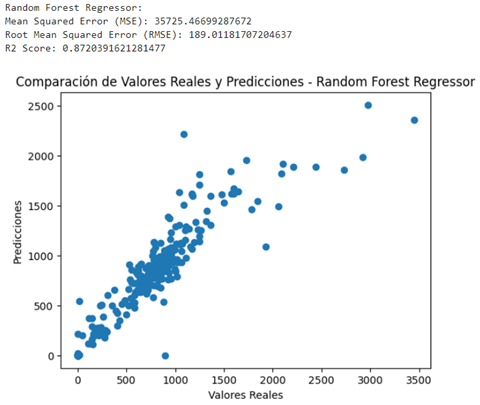
Figura 7 : Evaluación del rendimiento y
comparación entre los valores reales y las predicciones en los datos de
validación utilizando el Random Forest Regressor.
Error Cuadrático Medio (MSE): 35725.47
El error cuadrático medio es relativamente bajo, lo que indica que las predicciones del modelo están generalmente cerca de los valores reales.
Raíz del Error Cuadrático Medio (RMSE): 189.01
El RMSE, al estar en la misma unidad que la variable objetivo, sugiere que las predicciones tienen un error promedio de alrededor de 189 unidades.
R2 Score: 0.872
Un R2 Score de 0.872 indica que el modelo explica aproximadamente el 87.2% de la varianza en los datos de validación, lo cual se considera un ajuste muy sólido.
Análisis del Gráfico:
·
El gráfico de
dispersión compara los valores reales con las predicciones del modelo.
·
Los puntos
alineados alrededor de la línea diagonal indican una correspondencia estrecha
entre las predicciones y los valores reales.
·
Cuanto más
agrupados estén los puntos alrededor de la línea, mejor será el rendimiento del
modelo.
En conclusión, las métricas y el gráfico sugieren que el modelo Random Forest Regressor ofrece predicciones precisas y coherentes en los datos de validación, con un ajuste general satisfactorio. La varianza explicada del 87.2% indica una capacidad significativa para capturar las tendencias en los datos.
Análisis de las métricas de evaluación en los datos de entrenamiento:
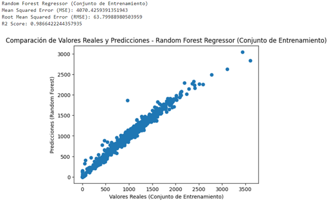
Figura 8 : Evaluación del rendimiento y
comparación entre los valores reales y las predicciones en los datos de entranamiento utilizando el Random
Forest Regressor.
Error Cuadrático Medio (MSE): 4070.43
El error cuadrático medio es relativamente bajo, indicando que las predicciones del modelo están muy cerca de los valores reales en el contexto de los datos de entrenamiento.
Raíz del Error Cuadrático Medio (RMSE): 63.80
El RMSE, al estar en la misma unidad que la variable objetivo, sugiere que las predicciones tienen un error promedio de aproximadamente 63.80 unidades.
R2 Score: 0.987
Un R2 Score de 0.987 indica que el modelo explica aproximadamente el 98.7% de la varianza en los datos de entrenamiento, lo que demuestra un ajuste extremadamente sólido.
Análisis del Gráfico en los Datos de Entrenamiento:
· El gráfico de dispersión compara los valores reales con las predicciones del modelo en los datos de entrenamiento.
· Los puntos alineados alrededor de la línea diagonal indican una correspondencia estrecha entre las predicciones y los valores reales.
· La densidad de los puntos cerca de la línea sugiere un rendimiento excelente del modelo, con una adecuación notable entre las predicciones y las observaciones reales.
Los resultados de las métricas y el gráfico confirman que el modelo Random Forest Regressor ofrece un rendimiento excepcional en los datos de entrenamiento, con una capacidad destacada para capturar las tendencias y proporcionar predicciones precisas. La varianza explicada del 98.7% destaca la robustez del modelo en este contexto específico.
En resumen, el modelo Random Forest Regressor ha demostrado una capacidad impresionante para
generalizar en datos no vistos, manteniendo al mismo tiempo un rendimiento
excelente en los datos de entrenamiento. Estos resultados destacan la robustez
del modelo y su potencial para proporcionar predicciones confiables para nuevas
observaciones.
5. Predicción
Predicciones para el Año 2018:
En el marco de nuestro análisis predictivo, hemos creado un DataFrame para las predicciones del año 2018. Para lograr esto, generamos una secuencia de fechas desde el 1 de enero de 2018 hasta el 30 de junio de 2018, detallada día a día. El DataFrame resultante, llamado `df_dates`, incluye varias columnas esenciales para un análisis exhaustivo.
Las columnas comprenden el día del mes (` Dia `), el mes (`Mes`), el año (`Año`), y el nombre del día de la semana (`Nombre_del_dia`). Esta estructuración detallada del tiempo nos permite comprender mejor las posibles variaciones según los días y meses específicos. Además, se agregó una columna importante, `Holiday`, para indicar si cada día corresponde a un día festivo o no. Esta información es crucial para tener en cuenta las variaciones estacionales y los comportamientos específicos asociados con los días festivos.
Al integrar estas características temporales en el DataFrame, estamos mejor preparados para evaluar el rendimiento de nuestro modelo de predicción en días específicos, tener en cuenta las tendencias estacionales y ajustar nuestra comprensión de los registros de vehículos a lo largo del tiempo.
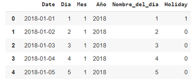
Figura 9 :
Visualización
del dataframe de predicción para el año 2018
Construimos el DataFrame `x_2018`, que abarca todas las características de entrada necesarias para predecir la cantidad diaria de vehículos registrados. Para lograrlo, utilizamos nuestro modelo Random Forest previamente entrenado con los datos de los años 2012 a 2016. Posteriormente, creamos el DataFrame `df_2018_predictions`, que contiene exclusivamente la fecha asociada a la predicción para cada día. Este último se guarda luego en formato CSV.
Inicialmente, llevamos a cabo una
minuciosa verificación del rendimiento de nuestro modelo durante los días
festivos, anticipando predicciones significativamente más bajas durante estos
períodos.
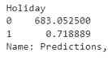
Figura 10: Comparación de Medias de
Predicciones entre Días No Festivos y Festivosen 2018
Tras un análisis detenido, se
observa que el modelo exhibe una notable capacidad de generalización en los
días festivos, con una tasa muy reducida de registros de vehículos durante
estas jornadas especiales.
En un segundo momento, evaluamos
la precisión de nuestro modelo para los domingos, con la esperanza de que las
predicciones para estos días sean considerablemente más bajas que las de los demás
días de la semana.
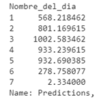
Figura 11: Comparación de Medias de
Predicciones para Diferentes Días de la Semana en 2018
A raíz de este análisis, se
evidencia que el modelo generaliza de manera efectiva para los domingos, con
una tasa muy baja de registros de vehículos durante estas jornadas.
Predicciones para los años 2012 a 2016:
Siguiendo una metodología similar a la aplicada para el año 2018, creamos un dataframe para los años 2012 a 2016, que incorpora las mismas características. Posteriormente, se construye el dataframe `x_2012_2016`, abarcando todas las funcionalidades necesarias para predecir diariamente el número de vehículos registrados. Al aplicar nuestro modelo Random Forest previamente entrenado, nos aseguramos de que las predicciones para los días festivos y los domingos sean notablemente inferiores a las de los demás días. Este último se guarda luego en formato CSV.
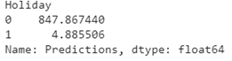
Figura 12: Comparación de Medias de Predicciones
entre Días No Festivos y Festivosen de 2012 a 2016
El análisis de los resultados revela coherencia en las tendencias observadas. De hecho, los días festivos se caracterizan por un bajo número de vehículos registrados, una observación respaldada por tasas de registro significativamente bajas en comparación con otros días.
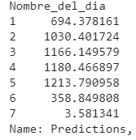
Figura 13: Comparación de Medias de
Predicciones para Diferentes Días de la Semana de 2012 a 2016
Asimismo, los domingos muestran una previsibilidad similar, con un registro de vehículos notablemente inferior en comparación con los demás días de la semana.
Este proyecto de análisis predictivo de registros de vehículos ha demostrado la eficacia de un enfoque basado en el modelo Random Forest Regressor. Utilizando datos históricos de los años 2012 a 2016, el modelo se entrenó con éxito para anticipar el número de vehículos registrados diariamente. Los resultados obtenidos para el año 2017 revelaron una capacidad significativa del modelo para generalizar en datos no vistos, confirmada por un rendimiento sólido tanto en días festivos como en domingos.
El análisis detallado de los resultados destacó la robustez del modelo en la captura de variaciones estacionales, con predicciones más bajas durante los días festivos y los domingos, en línea con las expectativas. La creación de dataframes específicos para estos periodos permitió una evaluación profunda del rendimiento del modelo, fortaleciendo la confianza en su capacidad para adaptarse a patrones temporales específicos.
En resumen, este proyecto ofrece una perspectiva práctica sobre el uso de técnicas de aprendizaje automático para predecir los comportamientos diarios de registro de vehículos. El modelo Random Forest Regressor se destaca como una solución confiable, abriendo la puerta a futuras aplicaciones en la gestión de recursos de transporte y la planificación operativa.
Plotly. (s. f.). https://plotly.com/python/plotly-express/
User Guide: Contents. (s. f.). scikit-learn. https://scikit-learn.org/stable/user_guide.html
MatplotLib visualization with Python. (s. f.). https://matplotlib.org/
CALENDARIO
COLOMBIA AÑO (2012-2018) https://calendariohispanohablante.com/2012/calendario-colombia-2012.html